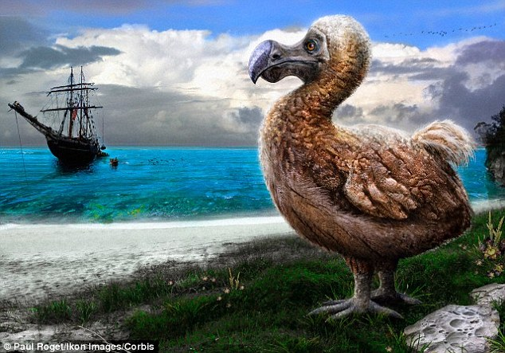
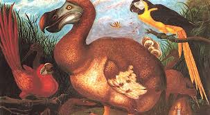

Extinction
Like many animals that evolved in isolation from significant predators, the dodo was entirely fearless of humans. This fearlessness and its inability to fly made the dodo easy prey for sailors. Although some scattered reports describe mass killings of dodos for ships' provisions, archaeological investigations have found scant evidence of human predation. Bones of at least two dodos were found in caves at Baie du Cap that sheltered fugitive slaves and convicts in the 17th century, which would not have been easily accessible to dodos because of the high, broken terrain. The human population on Mauritius (an area of 1,860 km2 or 720 sq mi) never exceeded 50 people in the 17th century, but they introduced other animals, including dogs, pigs, cats, rats, and crab-eating macaques, which plundered dodo nests and competed for the limited food resources. At the same time, humans destroyed the forest habitat of the dodos. The impact of the introduced animals on the dodo population, especially the pigs and macaques, is today considered more severe than that of hunting. Rats were perhaps not much of a threat to the nests, since dodos would have been used to dealing with local land crabs.
Diet
A 1631 Dutch document, rediscovered in 1887 but now lost, is the only account of the dodo's diet and also mentions that it used its beak for defence: These mayors are superb and proud. They displayed themselves to us with stiff and stern faces, and wide-open mouths. Jaunty and audacious of gait, they would scarcely move a foot before us. Their war weapon was their mouth, with which they could bite fiercely; their food was fruit; they were not well feathered but abundantly covered with fat. Many of them were brought onboard to the delight of us all. In addition to fallen fruits, the dodo probably subsisted on nuts, seeds, bulbs, and roots. It has also been suggested that the dodo might have eaten crabs and shellfish, like their relatives the crowned pigeons. Its feeding habits must have been versatile, since captive specimens were probably given a wide range of food on the long sea journeys.
Description

Blue parrots are very numerous there, as well as other birds; among which are a kind, conspicuous for their size, larger than our swans, with huge heads only half covered with skin as if clothed with a hood. These birds lack wings, in the place of which 3 or 4 blackish feathers protrude. The tail consists of a few soft incurved feathers, which are ash coloured. These we used to call 'Walghvogel', for the reason that the longer and oftener they were cooked, the less soft and more insipid eating they became. Nevertheless their belly and breast were of a pleasant flavour and easily masticated.
Cultural significance
The dodo's significance as one of the best-known extinct animals and its singular appearance led to its use in literature and popular culture as a symbol of an outdated concept or object, as in the expression "dead as a dodo," which has come to mean unquestionably dead or obsolete. Similarly, the phrase "to go the way of the dodo" means to become extinct or obsolete, to fall out of common usage or practice, or to become a thing of the past. "Dodo" is also a slang term for a stupid, dull-witted person, as it was supposedly stupid and easily caught.